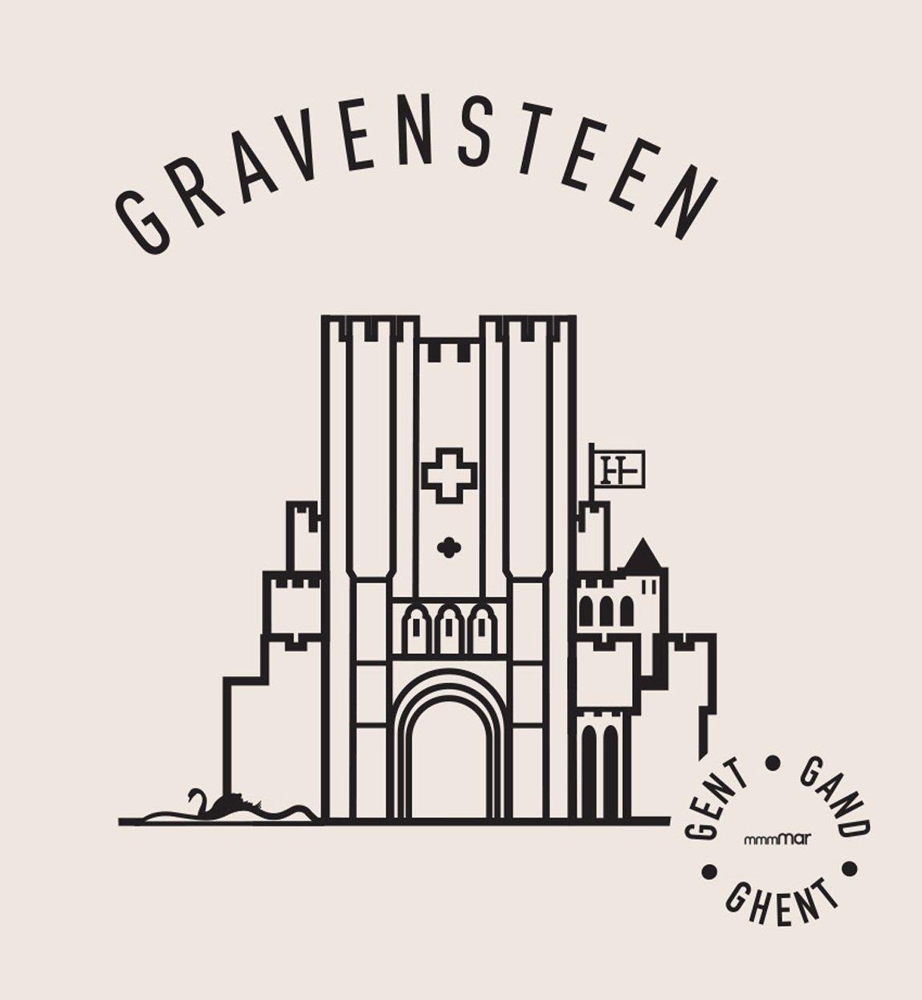

Het Gravensteen is een versterkte waterburcht, gelegen in de Oost-Vlaamse stad Gent met een vrijwel intact verdedigingssysteem. Het huidige kasteel in beheer van Historische Huizen Gent dateert uit 1180 en was de residentie van de graven van Vlaanderen tot 1353. Het werd oorspronkelijk nieuw slot ('novum castellum) genoemd.
Het werd later herbestemd als rechtbank, gevangenis, muntdrukkerij en zelfs als katoenfabriek. Het werd in 1893-1903 gerestaureerd.
Het is nu een museum en vormt een belangrijke toeristische trekpleister in de stad. Van de burcht zijn het poortgebouw, de walmuur, de donjon, de grafelijke residentie en de paardenstallen toegankelijk voor bezoekers.